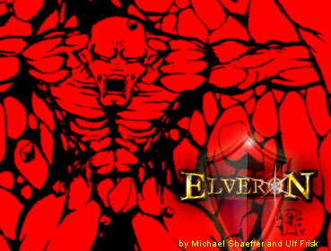

|  |
|
Unzip and install just like any other phpBB skin. Please note that this skin does not skin the admin pages. The admin pages will be shown in standard subSilver. If you wish to add your own logo to the forum you should do that by adding it to the image logo_background.gif found in the images folder. The skin was originally designed as a greenish medieval skin for the forums in the online web based game found at elveron.com. The result was this skin. Instead of keeping the skin to ourselves we decided to share it with the world! Thank you for downloading the Elveron skin. |